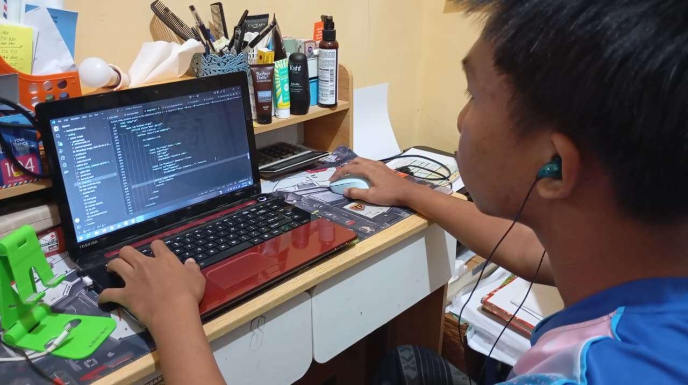

Perjalanan Hari Pertama Masuk Lab PPLG
Dipublikasikan pada:

Awal Mula Masuk PPLG
Awalnya saya memilih jurusan PPLG karena tertarik dengan dunia teknologi dan ingin belajar membuat website serta aplikasi. Pada awal belajar coding, saya merasa cukup bingung karena banyak tag dan kode yang harus dipahami. Namun, setelah sering berlatih saya mulai mengerti dasar HTML dan cara membuat sebuah halaman website.
Drama Kena Bug dan Error
Saat mengerjakan tugas coding, saya beberapa kali mengalami error. Pernah ada tag HTML yang lupa ditutup sehingga tampilan website menjadi berantakan. Saya juga pernah salah menuliskan nama file gambar sehingga gambar tidak muncul. Dari masalah tersebut saya belajar untuk lebih teliti dalam menulis kode dan mengecek kembali setiap bagian program.
Pelajaran dan Harapan Saya
Dari belajar PPLG, saya memahami bahwa membuat program membutuhkan ketelitian, kesabaran, dan kemauan untuk terus mencoba. Saya berharap kemampuan coding saya semakin berkembang sehingga setelah lulus nanti saya dapat membuat website atau aplikasi yang bermanfaat dan bisa menjadi bekal untuk masa depan.